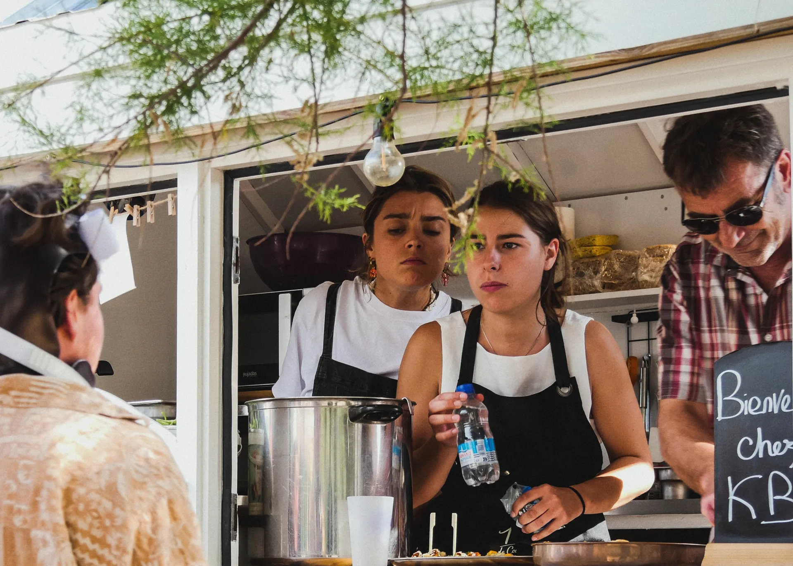
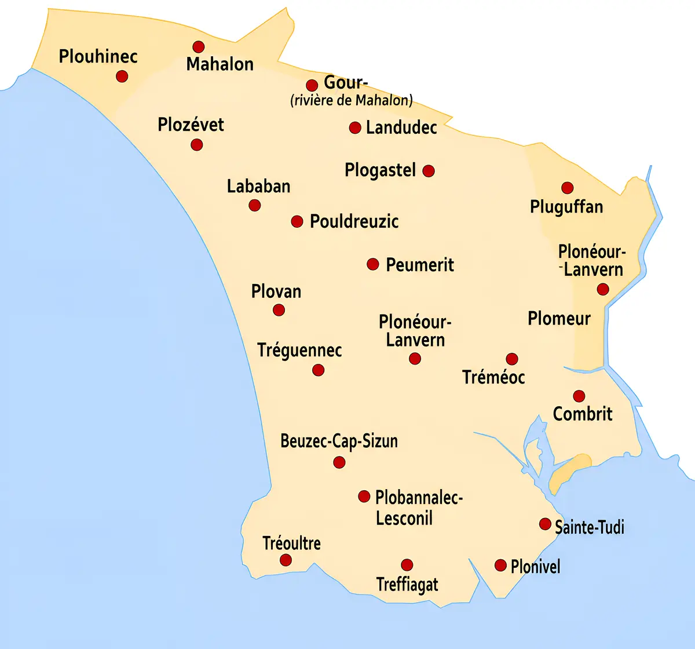
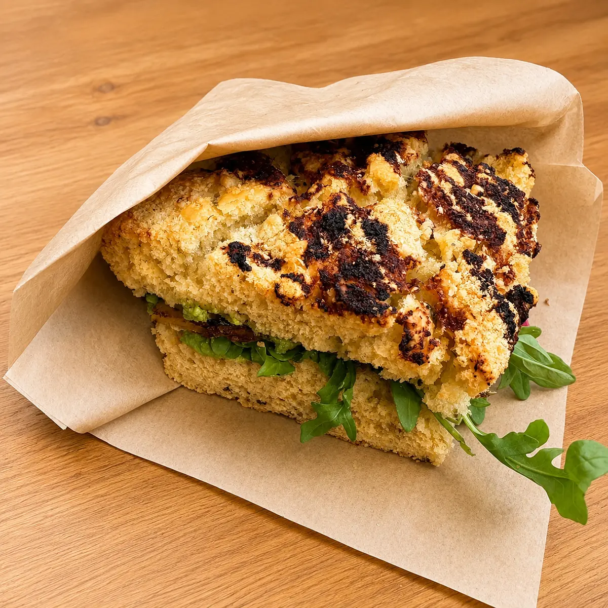
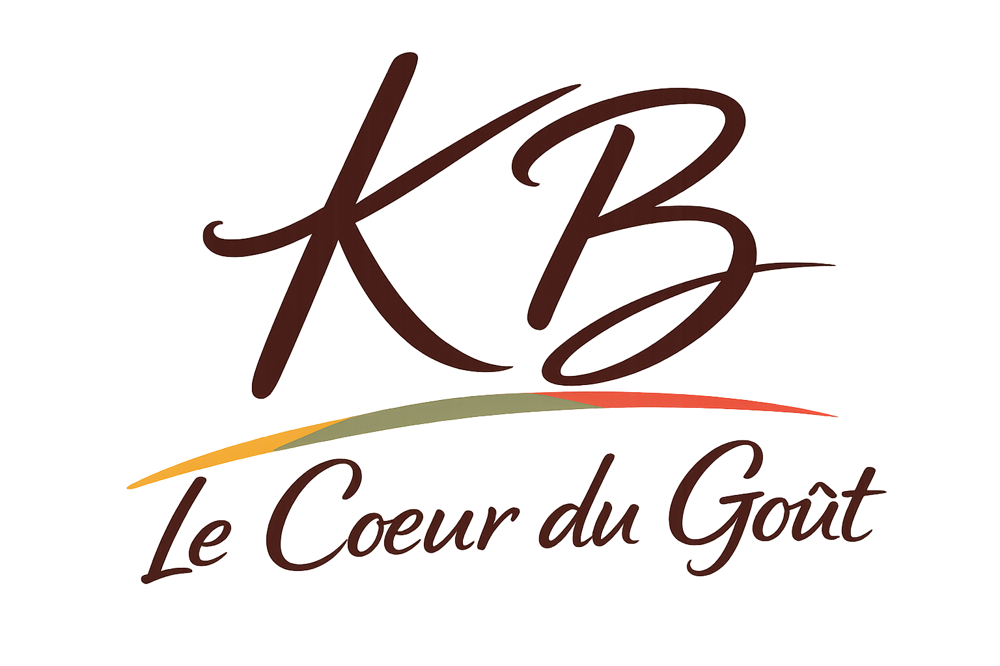
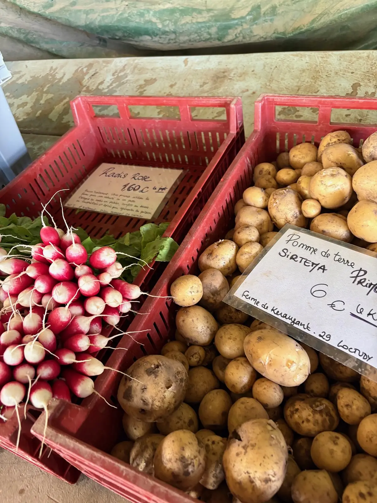
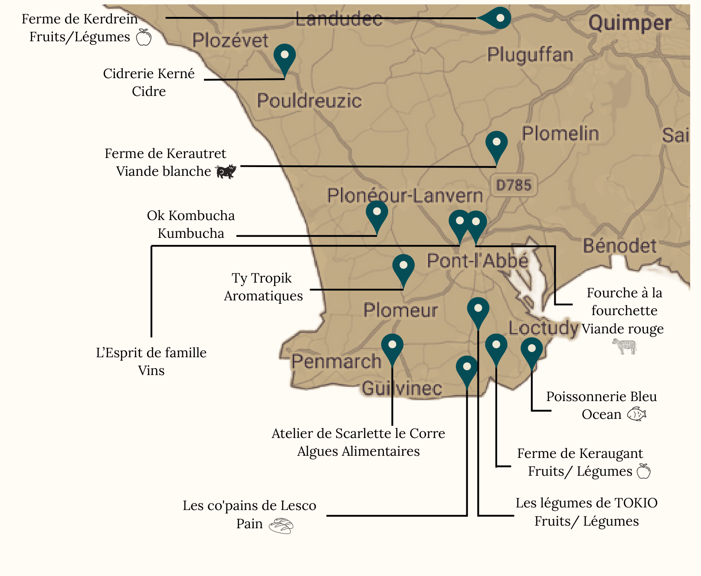

Un food truck version cheffe

Retrouvez-nous selon les jours sur nos différents emplacements et venez partager un moment gourmand autour d'une cuisine fraîche, locale et de saison.

Une carte vivante, locale et pensée au rythme des saisons, pour vous offrir chaque jour le meilleur des produits du moment.

Retrouvez nos jours et horaires de présence selon nos emplacements.
Notre cuisine repose sur une idée simple : travailler des produits frais, locaux et de saison pour proposer des plats gourmands, accessibles et inspirés. À travers une approche bistronomique et une carte qui évolue au fil des arrivages, nous mettons à l'honneur le savoir-faire de nos producteurs tout en laissant une place à la découverte et aux influences venues d'ailleurs.
Derrière les fourneaux, Marie, cheffe passionnée et forte de plus de 10 ans d'expérience, imagine une cuisine sincère et généreuse, nourrie par son parcours professionnel, ses voyages et ses rencontres culinaires.
Plus qu'un simple repas, nous souhaitons offrir un moment de partage, de convivialité et de plaisir autour du goût.



Mariages, événements d’entreprise, anniversaires ou soirées privées.
Parce qu'une cuisine de qualité commence par de bons produits, nous travaillons en priorité avec des producteurs et artisans locaux qui partagent nos valeurs de qualité, de proximité et de respect des saisons.
Au fil des saisons et des disponibilités, nous sélectionnons avec soin des produits issus de notre territoire afin de vous proposer une cuisine fraîche, authentique et toujours inspirée.
